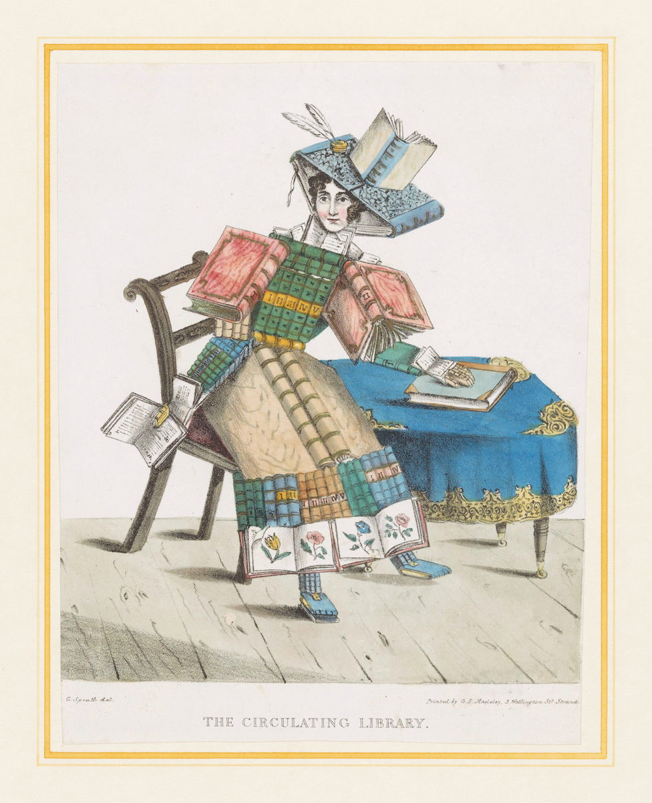

Amanda Masis is a graduate student at Dominican University completing her master's degree in library science. She comes to the field with an undergraduate degree in urban planning and associate's degrees in art history and sociology.
Her library career began at the Chicago Public Library, where she worked as a Cyber Navigator in the Bronzeville community, helping residents build digital skills and connect with online resources.
In May 2025, Amanda was selected to participate in the Newberry Library's Summer Library Assistant program. Working in the reading rooms, she assisted patrons, reshelved materials, responded to reference requests, and managed the library's genealogical periodicals. She stayed on after the summer as a Library Assistant and was promoted to Assistant Digital Asset Manager. She now helps to oversee the Newberry's digitized holdings and works to make them accessible to the public. Her current project involves preparing over 20,000 French pamphlets for researcher and public access.

Outside the library, Amanda is a fiber artist and independent researcher with a fine arts background in photography and installation. She works across fiber disciplines, creating wearable knits, knit and woven tapestries, and embroidered works. She has recently extended her practice into bookmaking and hopes to continue developing that work.
Drawing from theories of the archive and an internal archival impulse, her work as an artist finds its inspiration from the same place that made her turn to library work. As a researcher, she investigates textile and craft history, with particular attention to "women's work," natural dyes, and the symbolic life of textiles.
Her long-term goal is to become an archivist working with collections centered on artists and craftspeople — bringing together every thread of her training along the way.